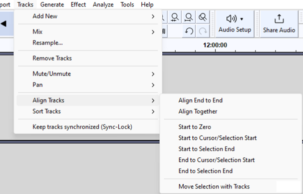

Audio Alignment
For example you would often want to do this when you have recorded one track against another and need to ensure the recorded track is properly synchronized with the other track(s).
Contents
- Using the Tracks Menu
- Moving clips manually
- Aligning tracks without a mouse - for visually impaired users
- Marking alignment points
Using the Tracks Menu
The menu commands in the submenu provide an automatic way of aligning selected tracks with the cursor, the selection, or with the start of the project:
- 
- Align End to End:
- Aligns the selected tracks one after the other, based on their top-to-bottom order in the project window. The first selected track remains where it is, the start of the second selected track aligns with the end of the first selected track and so on.
- Align Together:
- If you select multiple tracks, this command moves the tracks so that they all start at the same time, so audio within them changes its synchronization.
- Start to Zero:
- Aligns the start of selected tracks with the start of the project.
- Start to Cursor/Selection Start:
- Aligns the start of selected tracks with the current cursor position or with the start of the current selection.
- Start to Selection End:
- Aligns the start of selected tracks with the end of the current selection.
- End to Cursor/Selection Start:
- Aligns the end of selected tracks with the current cursor position or with the start of the current selection.
- End to Selection End:
- Aligns the end of selected tracks with the end of the current selection.
| If Sync-Lock Tracks is enabled, unselected tracks in a Sync-Locked Track Group will also move so that all the tracks in that group remain synchronized, except for the Align "End to End" and "Together" commands where only the selected tracks will move. Aligning end to end or together overrides Sync-Lock Tracks if necessary, so the selected tracks in that group may become de-synchronized. |
Moving clips manually
You can drag a clip by the Clip-handles at the top to align them with other items.
Then zoom in with Ctrl + 1 (or ⌘ + 1 on a Mac) so you can make a more precise alignment. Click in the track you want to move with the left button of the mouse, hold the button down while dragging the track to your required position, then release the mouse button.
There is no visual guesswork needed in aligning tracks as you can snap to track ends or labels when you time shift a track towards them. If you drag a selection region, the start point of the area on the time line is displayed dynamically, as a yellow vertical line, in the waveforms as you drag.
Aligning tracks without a mouse - for visually impaired users
Visually impaired users can use this Time Shifter plugin to time-shift tracks without a mouse. Instructions are given in Timeshif.TXT inside the zip folder.
This is one of a number of Nyquist plug-ins available for use in Audacity and works on both mono and stereo tracks.
| To install new plugins, place them in the "Plug-Ins" folder inside the Audacity installation folder. On Windows computers, your installation folder is usually under "Program Files". On Mac, it is usually under "Applications". Time Shifter will appear in the Effect Menu underneath the separator after you restart Audacity. See Installing Plugins for greater, per platform, detail. |
Marking alignment points
Some users find it easier to align tracks together when there is a vertical reference point extending down through all the tracks. You can make such a reference point by dragging the cursor down into the other tracks, and optionally by marking cursor positions with labels.
To drag the cursor into the other tracks, make sure you are using the Selection Tool  (shortcut F1), and place your cursor at a point where you want to line up the tracks. Then hold down Shift on your keyboard and click in the Track Control Panels (where the mute/solo buttons are) of all your other tracks. Now you will see the cursor displayed in all the tracks, and you can switch to the Time Shift Tool and line up all the tracks against the cursor line.
(shortcut F1), and place your cursor at a point where you want to line up the tracks. Then hold down Shift on your keyboard and click in the Track Control Panels (where the mute/solo buttons are) of all your other tracks. Now you will see the cursor displayed in all the tracks, and you can switch to the Time Shift Tool and line up all the tracks against the cursor line.
To add a label at a cursor point, use . You can use the shortcut Ctrl + B (or ⌘ + B on a Mac) instead. The label is created in a new Label Track underneath the audio tracks. When you click on the label, all tracks will be selected and the cursor will be displayed through all the tracks, just like when you selected all the tracks by clicking on their Track Control Panels. However the label provides a permanent reference point you can come back to, and because you can have multiple labels in a Label Track, there can be multiple points you can line up with.
| See Label Tracks for more details on labelling/marking audio in Audacity. |
You could also generate a Rhythm Track before you put other tracks on screen, using the command. This gives you visible and audible bars in that Rhythm Track at the beat points of a chosen tempo. You could use a beat point to set a cursor position then drag the cursor into the other tracks as described above. You need to close this Rhythm Track when you export your work (by clicking on the [X] top left of the track) so that you do not export the audible clicks, Alternatively you can simply mute the Rhythm Track prior to export by using the button in its Track Control Panel.